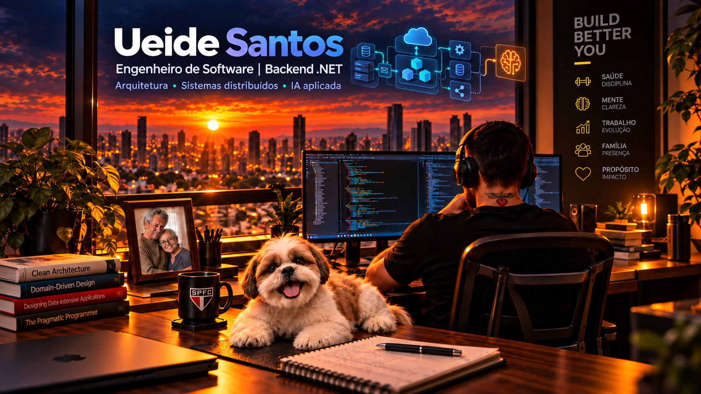

Pagamentos bancários
APIs, Kafka, RabbitMQ e arquitetura hexagonal na modernização da esteira de pagamentos do BMG.
Ver experiência no BMG →Backend .NET, sistemas distribuídos e IA aplicada.
Engenharia de software para bancos, fintechs e saúde. Experiência em APIs, mensageria, arquitetura e liderança técnica — com projetos públicos para explorar IA aplicada.

Resumo profissional
Backend, arquitetura e contexto de negócio.
Minha trajetória nasceu na engenharia de software backend e amadureceu em ambientes onde estabilidade, segurança, integração e clareza arquitetural fazem diferença. Ao longo da carreira, atuei em setores como saúde, bancos e fintechs, evoluindo APIs, sistemas legados, integrações, mensageria e plataformas corporativas.
A experiência na Unimed FESP consolidou uma visão mais ampla: tecnologia como operação, governança, entrega, indicadores, arquitetura e impacto no negócio. Nos últimos anos, aprofundei minha atuação em .NET, arquitetura hexagonal, microsserviços, Kafka, RabbitMQ, cloud e padrões de design aplicados a sistemas críticos.
Hoje, minha evolução está direcionada para IA aplicada. Estou cursando pós-graduação em Engenharia de Software com IA e desenvolvendo projetos que unem backend moderno, IA generativa, guardrails, observabilidade, LGPD, privacidade por design e responsabilidade técnica.
APIs, Kafka, RabbitMQ e arquitetura hexagonal na modernização da esteira de pagamentos do BMG.
Ver experiência no BMG →Arquitetura corporativa, governança e sistemas TISS na Unimed FESP, incluindo o Consultório Online.
Ver experiência na Unimed →Experimentos com RAG, agents e especificações, com código e limites de validação documentados.
Explorar projetos →Experiência
Bancos, fintechs, saúde e sistemas corporativos.
Desenvolvimento de soluções corporativas em ambiente bancário, conectando entendimento das regras de negócio, especificação e implementação. Atuação que combina construção de software e cuidado com a clareza das decisões técnicas.
Atuação na modernização da esteira de pagamentos de um grande banco, contribuindo para escalabilidade, resiliência, desacoplamento de processos críticos e integração entre múltiplos sistemas.
Atuação na evolução do backend do aplicativo Healthy, suportando jornadas de onboarding, e-commerce e billing, com impacto direto na experiência do usuário e no negócio.
Experiência em ambiente financeiro, atuando com backend .NET em contexto de alta exigência técnica, integração e qualidade de entrega.
Desenvolvimento e análise de sistemas com plataforma Microsoft, APIs, mensageria e infraestrutura moderna para aplicações corporativas.
Uma das fases mais formadoras da carreira: liderança técnica, arquitetura corporativa, governança de processos, sustentação de sistemas críticos e alinhamento entre tecnologia e negócio no setor de saúde suplementar.
Construção da base prática em desenvolvimento web e plataforma Microsoft, com C#, VB.NET, ASP.NET, ADO.NET e SQL Server. Essa fase consolidou disciplina técnica, raciocínio de manutenção e evolução de sistemas corporativos.
Projetos públicos
Laboratórios educacionais com documentação, decisões técnicas e limites explícitos.
KISS AI Labs
Uma trilha de nove laboratórios em .NET e Python: Ollama, RAG, MCP, SDD e agents. O lab 08 conecta especificação visual e contexto de negócio ao fluxo de desenvolvimento.
Cliente Figma MCP testado com mocks; integração real e revisão visual ainda não validadas.
Neuro Care
Laboratório de IA generativa aplicada à saúde digital. Explora a organização de relatos cognitivos, funcionais e comportamentais em um relatório para conversa com um profissional de saúde.
Projeto educacional: não diagnostica, não recomenda tratamento e não substitui avaliação médica.
Competências
C#, .NET 4.x, .NET Core, .NET 8, .NET 10, ASP.NET Core, Web API, workers e APIs REST.
Arquitetura em camadas, arquitetura hexagonal, DDD, SOLID, microsserviços, CQRS e EDA.
Kafka, RabbitMQ, AWS MSK, MSMQ, integração assíncrona e desacoplamento de processos críticos.
Azure, AWS, SQL Server, Oracle, MongoDB, DynamoDB, MySQL, Redis, S3 e Azure Data Factory.
CI/CD, Azure DevOps, testes unitários com xUnit, governança, observabilidade e métricas.
LLMOps, RAG, IA generativa, guardrails, privacidade por design, responsible AI e human-in-the-loop.
Formação
Aprendizado contínuo
Cursos complementares que reforçam minha base técnica, visão de arquitetura, governança e comunicação profissional.
Próxima conversa
Conheça meu trabalho, consulte o currículo ou entre em contato.
usjunior@gmail.com ↗